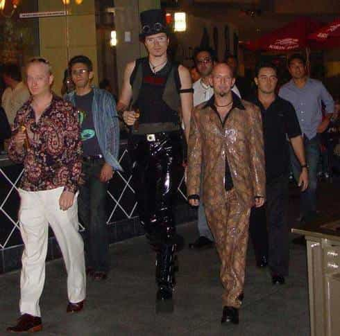

Daryush "Roosh" Valizadeh created ROK in October 2012. You can visit his blog at RooshV.com or follow him on Twitter and Facebook.


This was article was originally published on Roosh V.
For most of my adult life, I was pretty confident that Washington DC was the worst possible city for a man to live in, but I have found a place that is worse: Toronto, Canada. Here are the reasons why…
Do you remember how excited you were as a kid on Christmas when opening up the hot toy of the season? Well that’s how groups of Toronto girls act at last call when they realize it’s time to stuff their face with hot dogs, poutine, or diner fare. I thought women in DC were a little weird about getting pizza after the bars close, but the women of Toronto take it to another level—they have a plan to eat junk food before they even start drinking.
Good luck trying to have a ten minute non-interrupted conversation in a bar or club if her friends are nearby. If they don’t physically pull her away from you then what happens is that a rotating gaggle of women will come to “check up” on her, as if you’re on the verge of beating or raping her in full view of everyone. I’ve never seen such baby-like behavior in the Western world. I even experienced a case where the fat friend of a girl I was talking to said that I could “proceed” with the conversation. Fuck that.
In DC you have a bunch of lame people who think they are important because of their government job. In Toronto you have a bunch of lame people who think they are cool because… I don’t know why. This is even worse because instead of trying to impress you with the work they’re doing, they try to impress you with slang, name-dropping, or commenting on how “busy” they are. I remember when a girl tried to insult me by calling me a “fucktard” and another white bread girl said to “get at” her. Just because you know the words to a Drake song and go to expensive restaurants doesn’t make you cool.
I’m afraid that America has to take some blame for this because it seems that the our lifestyle has corrupted Canadian girls. It’s a shame because a lot of them have cute faces (they’re more attractive overall than DC chicks), but once you catch sight of her fat arms and the muffin top she’s trying to hide by wearing black, you start thinking of the porn clip you’ll soon be masturbating to.

I know some girls are reading right now and thinking, “They don’t give you eye contact because you are ugly!” This very well may be the case, but in Montreal I got daily eye contact from women who were much better looking than the Toronto specimens I had to deal with. Not only that, but Montreal women would smile at me. Yes, you read that right: attractive women would look at me and smile. In Toronto I might as well have been invisible.
Every social circle in Toronto has an overweight woman who acts as a leader of the pack. She is the one who tells girls where to go and who to talk to. Apparently this is how she gets power in life since she’s unable to exert the upper hand over men due to her unattractive and portly appearance. If the mother hen doesn’t approve of you then you will not get laid. She can snap her fingers and her minions jump to attention so that they are not excluded from the tribe. Therefore not only do you have to build attraction with the girl you like, but you also have to charm a fat and ugly girl to give you permission to just continue the interaction.
If you like white girls, a place like Toronto just won’t do, because there is too much immigration from non-white countries. At any bar at least 30% of the female clientele will be filled with minority races that don’t appeal to discriminating men like myself. While the Asian girls weren’t that bad since they adopted a white manner of appearance, the Indian girls were absolutely not attractive.
It shouldn’t be much of a challenge if you want to bang a Toronto girl who is a 5 or below. She will approach you, smile at you, and be generally easy (though of course you’ll still need game to seal the deal). In the accidental conversations I had with these unattractive women, I wished I had lower standards so that I could have mostly carefree sex that happens a million times a day in most parts of the world. In Toronto, however, once you encounter a girl who rises up into the 6 range, the difficulty of banging increases in shocking fashion. The 6’s and 7’s give you attitude or are encased in huge social groups. The 8’s and above, if you happen to see them, already have dudes.
I thought that Washington DC had a strong pickup culture, but I hadn’t been to Toronto. PUAs are like rats in Toronto, infecting many venues with their fake high energy, puffed-out chests, loud fashion accessories, and total sobriety. On Thursday night I went to Madison Avenue Pub where I got to see at least 50 of them approach every woman in the bar. As much as I want to hate on them for increasing the girls’ bitch shields, I now understand why they do it: they have to. The best game in Toronto is not being an interesting man but just approaching a million girls with your freezeouts and spin moves and negs until you find the horny girl who wants to fuck.

It wouldn’t be so bad if venues didn’t get hopping until midnight, but two hours is simply not enough time to find a good venue, mingle, and meet an attractive woman who you want to take home. By the time you get warmed up, it’s time to go. In Toronto you won’t have enough time for a real seduction, so what you see at the end of the night is a bunch of phone numbers being exchanged before girls rush off to a diner to stuff their face.
Your conversation has to be 100% perfect and 100% politically correct. You can’t say anything that can be remotely construed as offensive, weird, or needy. Once I told a girl that I like “feminine women” and she immediately ditched me as if I farted. In Toronto the best game is to speak like you’re a White House spokesperson. And god help you if you utter a lame joke! In one case I was talking to a girl for 30 minutes and had kept the conversation tight enough that we were getting to the kissing stage. Then I made a mediocre joke and she said, “Wow that was corny. I should leave now.” This came from a woman who didn’t say one interesting or funny thing to me all night and thought I would be impressed with her “marketing” job. Toronto women would absolutely never get laid if they were men.
Food, drinks, taxis, and lodging are all more expensive than DC. Do you get any additional value for paying more? Nope, you only get crappier women and intolerable weather.
Most of the people who party within the center on weekends actually live in boring cul-de-sacs. Friday and Saturday nights in Toronto is like how Washington DC is on New Year’s Eve: amateur hour. You get a bunch of office drones with no character or class crowding venues and acting like they’ve never seen alcohol or the opposite sex before. My best night out was Monday because there was a total lack of 905’ers.
I never saw an average-looking guy with a hot girl, but I saw many attractive guys with average girls. Toronto is a penis paradise where a woman can date a man much more attractive than she is pretty. If you’re not a good looking guy, you either have to own a nightclub or approach 100 girls a week.
I saw too many men who looked like corpses. They had no color, no energy, and seemingly no will to live. Spending too much time in Toronto will reduce your ambition, your horniness, and your happiness. Many guys I talked to said that when they traveled abroad, they couldn’t believe that hotter women made regular eye contact with them and responded with gentle smiles and warm vibes. Toronto is one of those cities that can make men hate life. Staying out of here becomes essential for your mental health.
Both Toronto and DC suck, but I wouldn’t hesitate to pick DC first. The nightlife gets going earlier and lasts longer. More girls live in the city. There is much less cockblocking. It’s not a deal breaker if you say a bad joke. Girls actually want to get laid, and it’s simply easier to get one-night stands. While Toronto had prettier women overall, it’s not enough to make it a better city. You know you’re in a crappy place when it’s midnight and you are more concerned about spending less money than having a good time with a cool chick. For the nights I spent going out in Toronto, I wished I stayed in and read a couple good books instead.
Read Next: 15 Reasons Why Washington DC Sucks For Guys